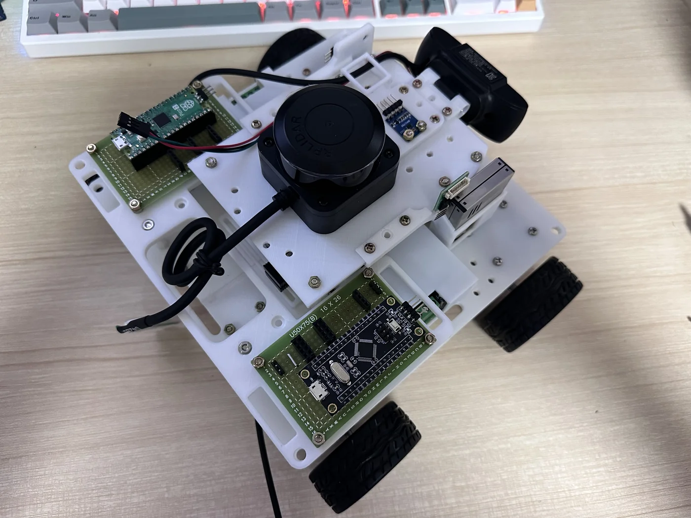

SYSTEM
STM32F103주행 제어 · PID
binary
Raspberry Pi 5ROS 2 · SLAM · 탐지
USB CDC
RP2350환경 센서 퓨전
rosbridge · 탐지 이벤트 + SLAM 좌표
React 관제이벤트 맵
Scout2Map
다중 센서 기반 재난현장 정찰 UGV와 SLAM 이벤트 맵 관제
- 졸업작품
- 서울시 앵커사업 과제
- 제24회 임베디드SW공모전 출품
사람이 들어가기 전에 재난 현장을 먼저 돌아보는 로봇입니다. 로봇 안에서 화재, 연기, 쓰러진 사람, 소화기, 비상구를 탐지하고, 원시 영상 대신 SLAM 좌표를 붙인 이벤트만 관제로 올려 링크 전송량을 약 2,400배 줄였습니다.
제가 맡은 일
- STM32F103 주행 제어 펌웨어를 HAL·RTOS 없이 CMSIS 레지스터 수준으로 작성, 쿼드러처 엔코더 기반 PID 속도 제어
- RP2350 센서 퓨전 펌웨어와 ROS 2 중계 노드, MCU와 ROS 2 사이 바이너리 프로토콜 정의
- 메시지 필드·단위·좌표 상태값을 PROTOCOL.md로 먼저 확정한 뒤 코드를 고치는 순서를 팀에 정착
- 탐지 클래스를 정하고 공개 데이터셋을 모아 모델을 학습, 로봇 온보드에서 추론
- 하드웨어 접근부를
drive_io_t함수 테이블로 분리해 보드 없이 PC에서 기구학·PID 단위 테스트 - 펌웨어 릴리스에 시맨틱 버전 태그 도입
- 131:1
- 실측으로 바로잡은 감속비 (알던 값 150:1)
- 41%
- 각속도 저하 원인, 스키드 조향 보정 계수 누락 규명
- Fallback
- 엔코더 유실 시 개루프로 전환해 임무 지속
지금 하는 일 LiDAR 사각지대를 VL53L0X ToF 센서 2개로 보완해 Nav2 충돌 감시 계층에 반영하고 있습니다.
- STM32
- CMSIS
- RP2350
- C
- ROS 2
- Nav2
- SLAM
- rosbridge
- React